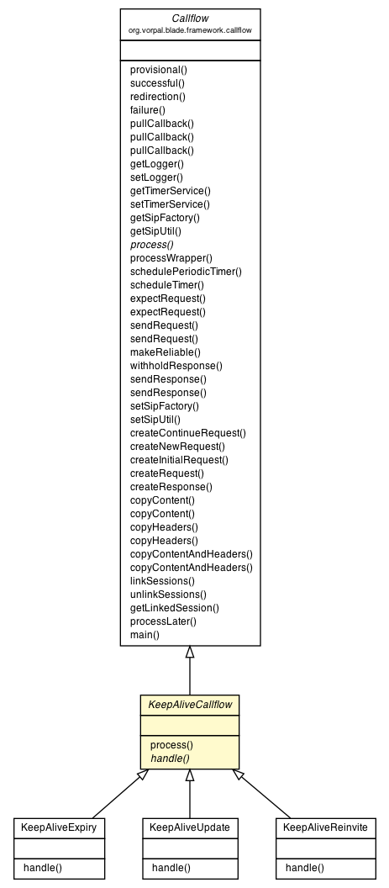

org.vorpal.blade.framework.callflow.Callflow
org.vorpal.blade.services.keepalive.KeepAliveCallflow
org.vorpal.blade.framework.callflow.Callflow
org.vorpal.blade.services.keepalive.KeepAliveCallflow
|
|||||||||
| PREV CLASS NEXT CLASS | FRAMES NO FRAMES | ||||||||
| SUMMARY: NESTED | FIELD | CONSTR | METHOD | DETAIL: FIELD | CONSTR | METHOD | ||||||||

java.lang.Object
public abstract class KeepAliveCallflow
| Field Summary |
|---|
| Fields inherited from class org.vorpal.blade.framework.callflow.Callflow |
|---|
ACK, BYE, CANCEL, Contact, INFO, INVITE, NOTIFY, OPTIONS, PRACK, PUBLISH, REFER, REGISTER, RELIABLE, SIP, sipFactory, sipLogger, sipUtil, SUBSCRIBE, timerService, UPDATE |
| Constructor Summary | |
|---|---|
KeepAliveCallflow()
|
|
| Method Summary | |
|---|---|
abstract void |
handle(javax.servlet.sip.SipSession sipSession)
|
void |
process(javax.servlet.sip.SipServletRequest request)
|
| Methods inherited from class org.vorpal.blade.framework.callflow.Callflow |
|---|
copyContent, copyContent, copyContentAndHeaders, copyContentAndHeaders, copyHeaders, copyHeaders, createContinueRequest, createInitialRequest, createNewRequest, createRequest, createResponse, expectRequest, expectRequest, failure, getLinkedSession, getLogger, getSipFactory, getSipUtil, getTimerService, linkSessions, main, makeReliable, processLater, processWrapper, provisional, pullCallback, pullCallback, pullCallback, redirection, schedulePeriodicTimer, scheduleTimer, sendRequest, sendRequest, sendResponse, sendResponse, setLogger, setSipFactory, setSipUtil, setTimerService, successful, unlinkSessions, withholdResponse |
| Methods inherited from class java.lang.Object |
|---|
clone, equals, finalize, getClass, hashCode, notify, notifyAll, toString, wait, wait, wait |
| Constructor Detail |
|---|
public KeepAliveCallflow()
| Method Detail |
|---|
public void process(javax.servlet.sip.SipServletRequest request)
throws javax.servlet.ServletException,
java.io.IOException
process in class org.vorpal.blade.framework.callflow.Callflowjavax.servlet.ServletException
java.io.IOExceptionpublic abstract void handle(javax.servlet.sip.SipSession sipSession)
handle in interface javax.servlet.sip.SessionKeepAlive.Callback
|
|||||||||
| PREV CLASS NEXT CLASS | FRAMES NO FRAMES | ||||||||
| SUMMARY: NESTED | FIELD | CONSTR | METHOD | DETAIL: FIELD | CONSTR | METHOD | ||||||||